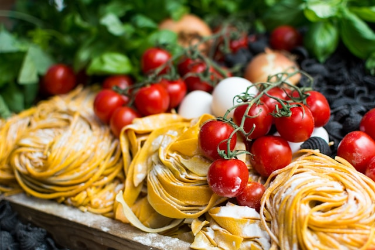
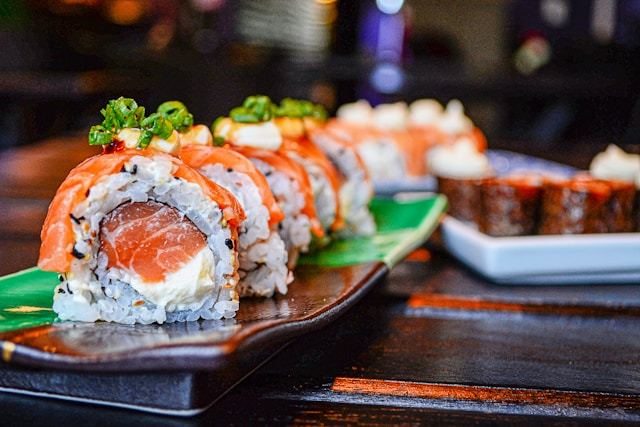
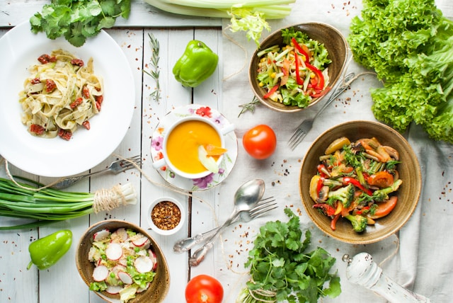

Italiensk Husmanskost
I den här kursen fokuserar vi på rustik matlagning från Italiens olika regioner: hemlagad pasta, smakrik tomatsås, krämig risotto och traditionell tiramisù. Kursen passar dig som vill laga genuin mat med enkla ingredienser och mycket kärlek.

Tid: 3 timmar
Plats: Sveavägen 22, Stockholm
Kursledare: Andrea Rossi, utbildad i Toscana
Sushi för Nybörjare
Upptäck konsten att rulla sushi! I den här populära kursen får du lära dig grunderna i japansk sushi – hur man kokar perfekt sushiris, använder bambumatta och kombinerar smaker på ett balanserat sätt. Du får göra både maki, nigiri och vegetarisk sushi.

Tid: 2,5 timmar
Plats: Torggatan 15, Göteborg
Kursledare: Yuki Tanaka, tidigare kock i Tokyo
Vegetarisk Matlagning
Kreativ matlagning med grönsaker i fokus. Här lagar vi smakrika vegetariska rätter som passar både till vardag och fest. Du får tips om hur man bygger umami utan kött, använder linser, bönor och gryn samt jobbar med smaksättning, textur och uppläggning.

Tid: 3 timmar
Plats: Nygatan 7, Malmö
Kursledare: Emma Bergström, kock & kostrådgivare